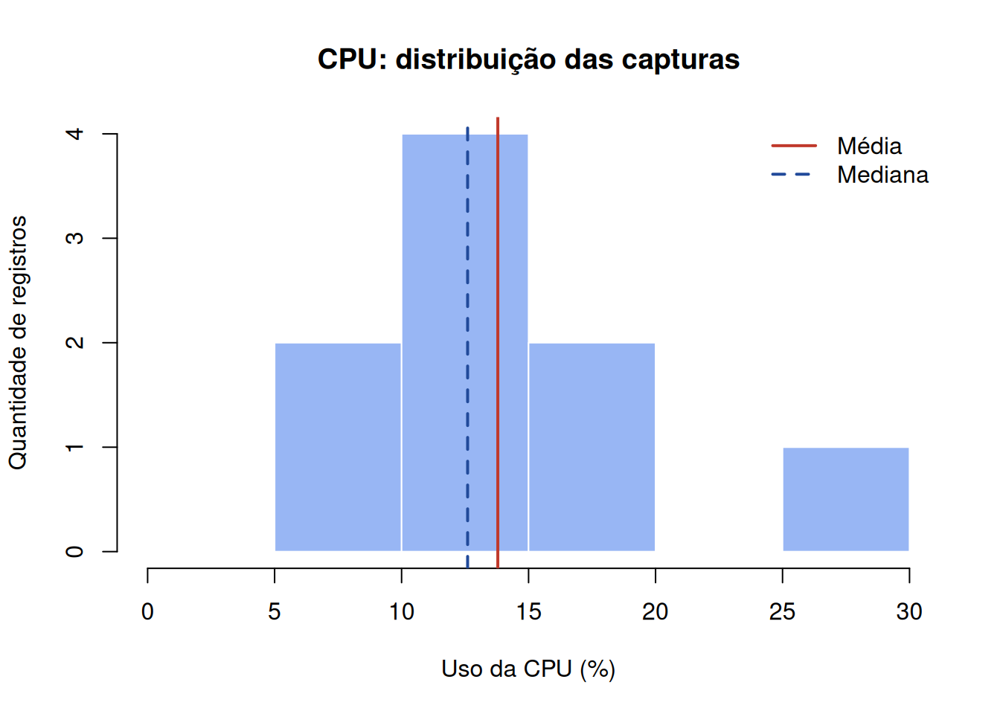
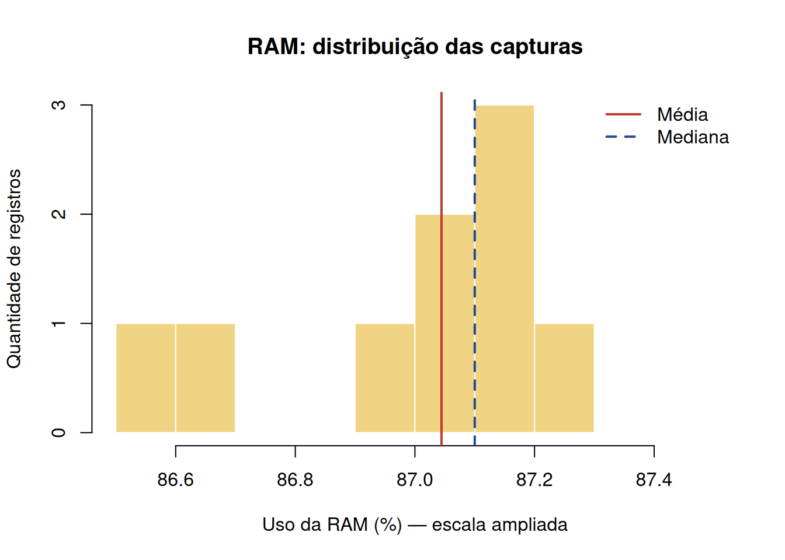
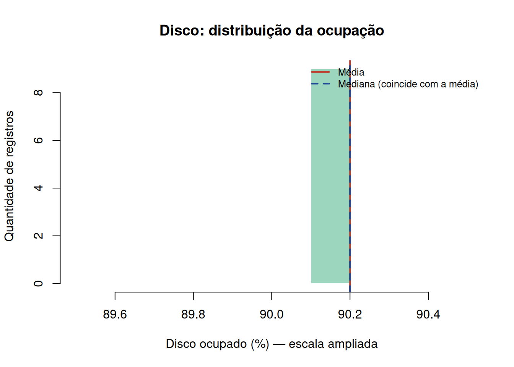
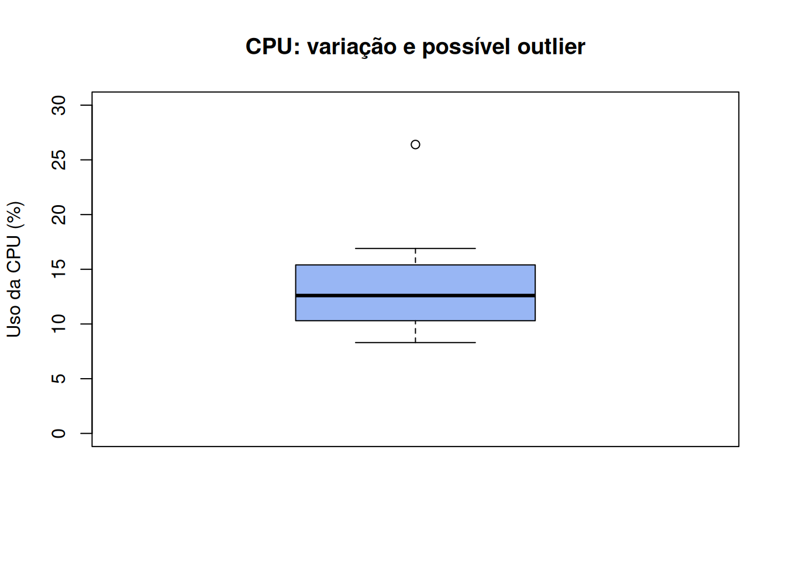
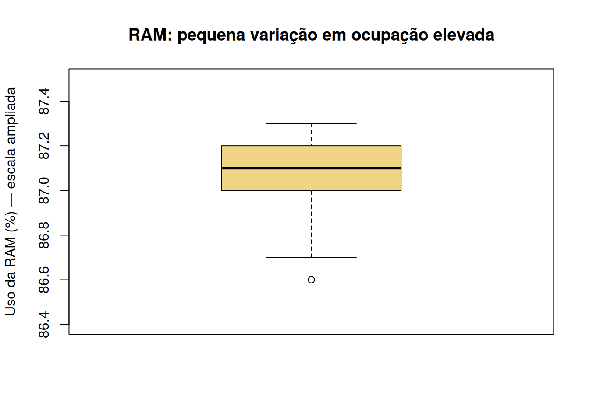
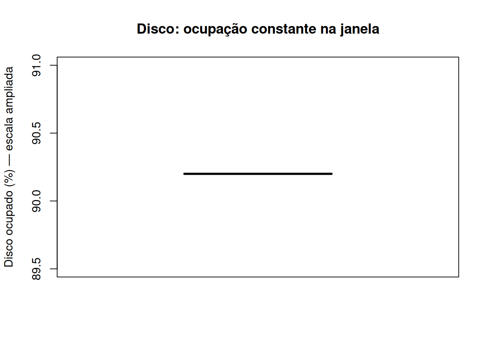
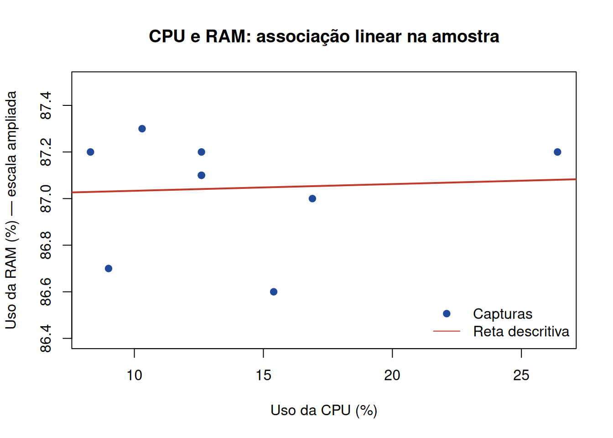

| Hostname | Timestamp | CPU (%) | RAM (%) | Disco (%) | Qtd. processos |
|---|---|---|---|---|---|
| LAPTOP-TQPP5J6D | 2026-10-05 04:56:37 | 8,3 | 87,2 | 90,2 | 281 |
| LAPTOP-TQPP5J6D | 2026-10-05 04:56:39 | 12,6 | 87,1 | 90,2 | 281 |
| LAPTOP-TQPP5J6D | 2026-10-05 04:56:41 | 26,4 | 87,2 | 90,2 | 280 |
| LAPTOP-TQPP5J6D | 2026-10-05 04:56:43 | 16,9 | 87,0 | 90,2 | 280 |
| LAPTOP-TQPP5J6D | 2026-10-05 04:56:46 | 12,6 | 87,1 | 90,2 | 280 |
| LAPTOP-TQPP5J6D | 2026-10-05 04:56:48 | 10,3 | 87,3 | 90,2 | 280 |
| LAPTOP-TQPP5J6D | 2026-10-05 04:56:50 | 12,6 | 87,2 | 90,2 | 280 |
| LAPTOP-TQPP5J6D | 2026-10-05 04:56:52 | 15,4 | 86,6 | 90,2 | 280 |
| LAPTOP-TQPP5J6D | 2026-10-05 04:56:54 | 9,0 | 86,7 | 90,2 | 280 |
Olhar somente o último valor esconde o pico registrado anteriormente.
| Componente | Último % | Media | Mediana | Mínimo | Máximo | Desvio Padrão |
|---|---|---|---|---|---|---|
| CPU | 9.0 | 13.79 | 12.6 | 8.3 | 26.4 | 5.49 |
| RAM | 86.7 | 87.04 | 87.1 | 86.6 | 87.3 | 0.24 |
| DISCO | 90.2 | 90.20 | 90.2 | 90.2 | 90.2 | 0.00 |
Um histograma conta quantas capturas ficaram em cada faixa de utilização.

Utilidade na dashboard: O histórico de CPU permite verificar se um valor alto é pontual ou repetido. O histograma fundamenta essa leitura da frequência dos níveis de consumo, mas não mostra a ordem temporal do pico.


Outlier estatístico não é sinônimo de alerta operacional. Os limites de alerta são regras do negócio configuradas no sistema.

Análise: Embora seja um destaque estatístico, 26,4% não representa, por si só, saturação de CPU.
Utilidade na dashboard: sustenta a necessidade de um histórico. Antes de gerar um incidente, é necessário comparar a medição ao parâmetro operacional.


Usamos Pearson para descrever a associação linear entre CPU e RAM medidas nos mesmos instantes.

Utilidade na dashboard: fundamenta manter indicadores e históricos separados para CPU e RAM, sem usar um como substituto do outro. Comparar os componentes no mesmo período pode orientar a investigação de possíveis sobrecargas. Uma futura visualização de correlação ajudaria a levantar hipóteses de associação, mas não comprovaria que um componente causa o consumo do outro.
O dash_servidor.js enviado utiliza limites default de CPU 80%, RAM 75% e DISCO 75%. Por outro lado, o Back-End do site permite configurar limite_atencao e limite_critico em parametro_alerta.
| Componente | Limite Crítico | Leituras acima do limite |
|---|---|---|
| CPU | 80 | 0 |
| RAM | 75 | 9 |
| DISCO | 75 | 9 |
Interpretação: usando apenas as referências default, a CPU ficou abaixo do limite nas nove capturas; RAM e disco ficaram no ou acima do limite nas nove. Isso evidencia a utilidade de limites específicos por componente e do status junto ao valor de utilização.
Nove leituras acima do limite não são nove alertas ativos. As capturas podem pertencer à mesma situação contínua. Contar incidentes ou chamados exige regras de abertura/fechamento, identificação do evento e histórico do sistema/Jira.
A amostra mostra três comportamentos distintos: CPU com consumo baixo e um pico relativo, RAM com ocupação elevada e pouca variação e disco com ocupação elevada e constante. Essas diferenças fundamentam os cards e históricos separados por componente: um único indicador de “saúde” esconderia informações relevantes.